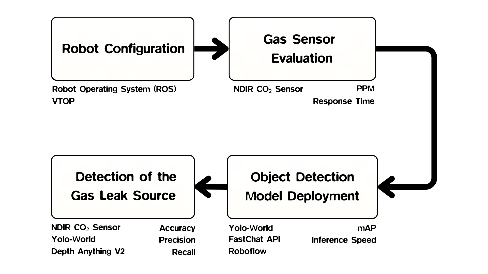
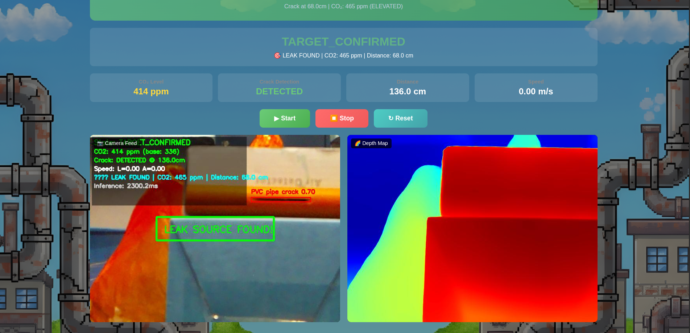
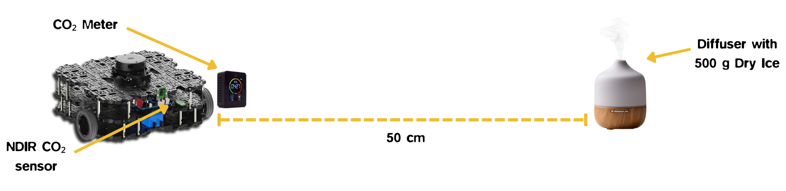
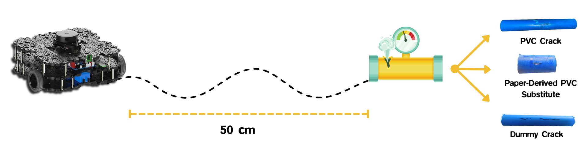
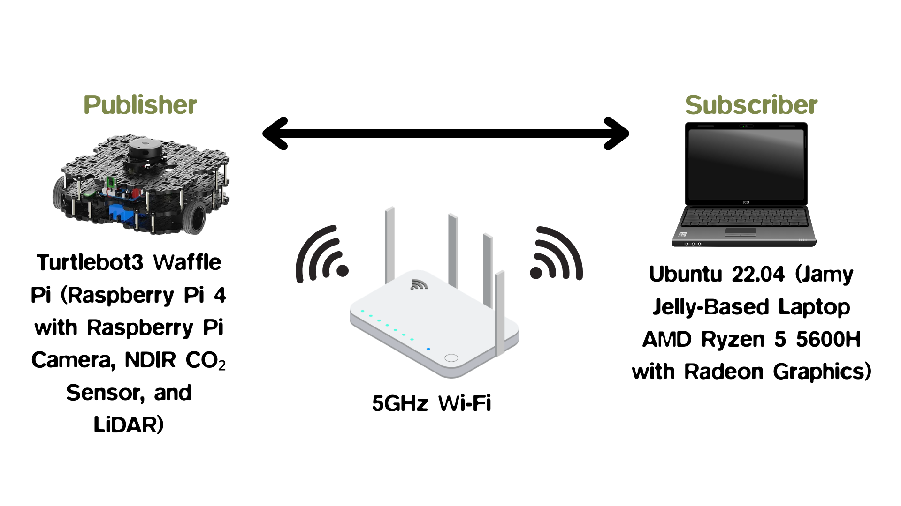

Gazzard: Gas Leak Detection using a Mobile Robotic Platform
CO2 pipe leaks are colorless and odorless, and neither a gas sensor nor a camera is reliable alone. Gazzard fuses an NDIR CO2 sensor with zero-shot YOLO-World crack detection on a TurtleBot3, confirming which crack is actively leaking and cutting false positives from 100% to 6.67%.
📄 Abstract
In enclosed industrial facilities, CO2 pipe leaks pose safety risks because the gas is colorless and odorless, allowing it to accumulate undetected in confined spaces. While various robotic systems have been deployed to automate gas leak detection, they face limitations: airflow patterns can mislead gas sensors, and vision-based systems struggle to detect invisible CO2 plumes or confirm whether identified cracks are actively leaking. This study integrates a Senseair S8 NDIR CO2 sensor with a zero-shot YOLO-World object detection model on a TurtleBot3 Waffle Pi platform running ROS 2 Humble, combining gas concentration monitoring with visual crack detection and Depth-Anything-V2 depth estimation to verify leak sources and reduce false alarms. Across four evaluation phases, ROS 2 communication latency averaged 24.23 ms, sensor percentage errors stayed within the ±3% tolerance (1.09–1.49%), and the detection model reached an mAP@50–95 of 0.8692 for pipe crack identification. Fusing visual detection with CO2 concentration data increased leak identification accuracy from 46.67% to 90% and reduced false positives from 100% to 6.67%, showing that threshold-based sensor fusion is needed for reliable leak source confirmation.
📸 System in Action
Research Process Flow

Operational Graphical User Interface



🤖 System
Gazzard is a ROS 2 Humble workspace running on a TurtleBot3 Waffle Pi. A distributed publisher–subscriber graph streams camera frames, CO2 readings, and timing data between the robot and an onboard laptop, where YOLO-World and Depth-Anything-V2 run the detection pipeline.

Hardware
- Robot platformTurtleBot3 Waffle Pi
- CO₂ sensorSenseair S8 (NDIR, UART)
- Sensor range400–10,000 ppm, ±40 ppm ±3%
- CameraRaspberry Pi Camera v2.1 (8MP)
- Onboard OSUbuntu 22.04 + ROS 2 Humble
- Link5 GHz Wi-Fi
Software Stack
- DetectionYOLO-World XL (zero-shot)
- DepthDepth-Anything-V2
- Class promptsdummy / pvc pipe / paper crack
- Fusion ruleCrack + elevated CO₂ → leak source
- ROS 2 latency24.23 ms avg (distributed)
- UART response21.81 ms avg
📊 Key Results
Evaluated over 30 controlled trials (15 leak / 15 no-leak) using dry ice to simulate CO2 leaks.
crack detection
fused (from 46.67%)
down from 100%
distributed nodes
Sensor Fusion vs. Detection Only
| Method | Accuracy | Precision | Recall | FP rate |
|---|---|---|---|---|
| Detection only | 46.67% | 48.28% | 93.33% | 100% |
| Detection + CO2 | 90.00% | 92.86% | 86.67% | 6.67% |
Vision alone flags every crack as a leak (100% FP) because CO2 is invisible. Adding the CO2 threshold check recovers 14 of 15 true negatives. Wilson 95% CI for fused accuracy: 74.4–96.5% (n=30).
Per-Class Detection (mAP50:95)
| Crack type | Substrate | mAP50:95 |
|---|---|---|
| Dummy crack | Smooth PVC | 0.9560 |
| PVC pipe crack | PVC pipe | 0.9116 |
| Paper core crack | Porous paper | 0.7400 |
Zero-shot YOLO-World XL, mean 0.8692 across types. Detection accuracy tracks substrate texture: smoother surfaces are easier to localize than porous paper.
Inference Latency (CPU, TurtleBot3 laptop)
| Component | Mean ± Std |
|---|---|
| YOLO-World XL | 892.37 ± 60.61 ms |
| Depth-Anything-V2 | 1028.47 ± 66.53 ms |
| Total pipeline | 1920.84 ± 100.58 ms |
| Throughput | 0.52 ± 0.03 FPS |
CPU-only inference. Depth estimation, not detection, dominates the pipeline latency; GPU deployment is recommended for real-time operation.
📝 BibTeX
If you find this work useful in your research, please consider citing:
🙏 Acknowledgment
This research was conducted at the Department of Electronics Engineering, Faculty of Engineering, University of Santo Tomas. We gratefully acknowledge and sincerely thank the SafeGuard project of Dr. Anthony James Bautista for funding this research and making this work possible.